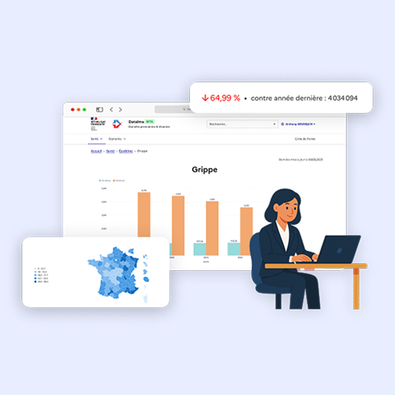

Présidence de la République
Directeur Produit / CPO pour la start-up d'état Datalma - programme Entrepreneur d'Intérêt Général au sein de la Direction Interministérielle du Numérique (DINUM).
Datalma est un développement conjoint entre les Services du Premier Ministre (DINUM) & la Présidence de la République
Plateforme d'intelligence décisionnelle pour le sommet de l'État. Cible : Président, ministres, conseillers, directeurs de cabinet, directeurs d'administration centrale.
« Contribuer à une action publique à la fois plus performante et plus ouverte, en transformant l'accès aux données gouvernementales pour les décideurs et à terme pour les citoyens. »
Mission
Faciliter l'accès aux données publiques et inter-administratives non ouvertes pour permettre des décisions politiques éclairées et rapides — y compris en mobilisant l'IA pour trouver des corrélations entre les données.
Réalisations
Plateforme décisionnelle — observatoire santé
- Tableaux de bord internes pour Président, Matignon et ministère de la Santé sur des indicateurs non ouverts (épidémies, hospitalisations…)
- Observatoire grand public du suivi de la grippe — shippé en 1 semaine, repris par la presse comme alternative aux rapports institutionnels
Datalma Alerting — pipeline IA presse × données internes
Système qui détecte dans la presse les sujets sur lesquels l'État dispose de données pour communiquer.
- Pipeline 4 étapes : ingestion RSS (~30 articles/jour) → embeddings Qwen3-Embedding-0.6B → similarité cosinus vs catalogue dataset → email top-5 à 9 h
- Stack 100 % souveraine
Stack
Python, Metabase, Dagster, dbt, React, Mistral.
